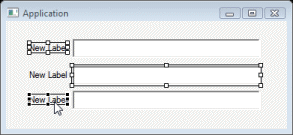
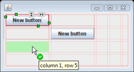
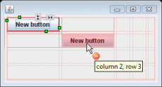

The tool provides the following accessibility features:
-
Keyboard equivalents for most actions. For example, widgets may be moved in any free form layout using the arrow keys. Likewise, the palette and property pane can be traversed using the arrow keys.
-
Visual focus indicators are provided for selected widgets in the component tree and design view as well as for the currently selected property.

-
Color preferences are provided to control feedback for most layout managers.
-
Color is used as an enhancement to various feedbacks in the design view.


-
System high contrast settings are respected
-
System fonts, colors and sizes are inherited
-
Blinking text or objects are avoided
-
Documentation is provided in an accessible format
-
No audio alerts are used